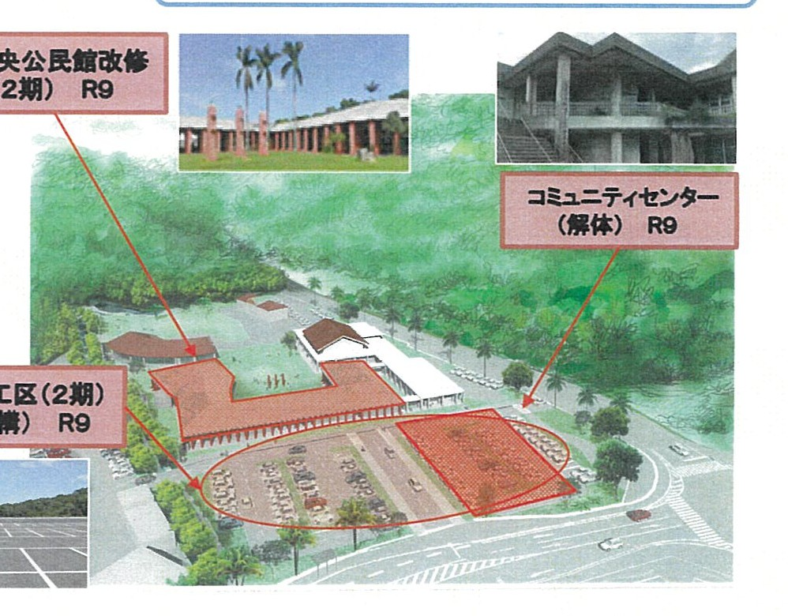
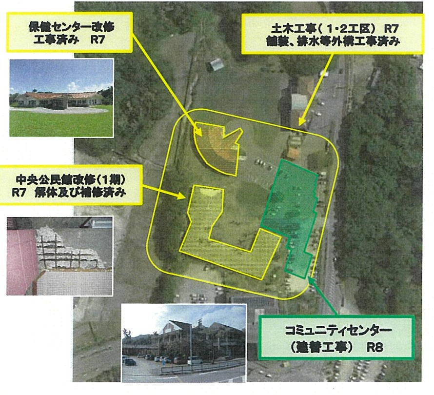
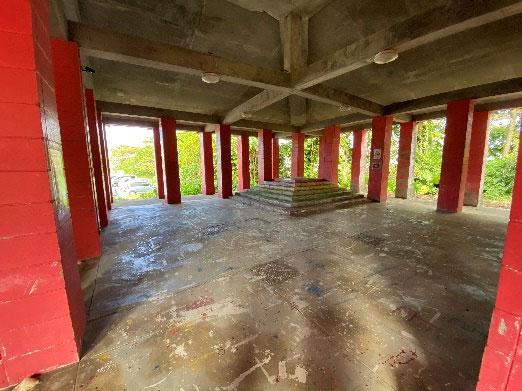
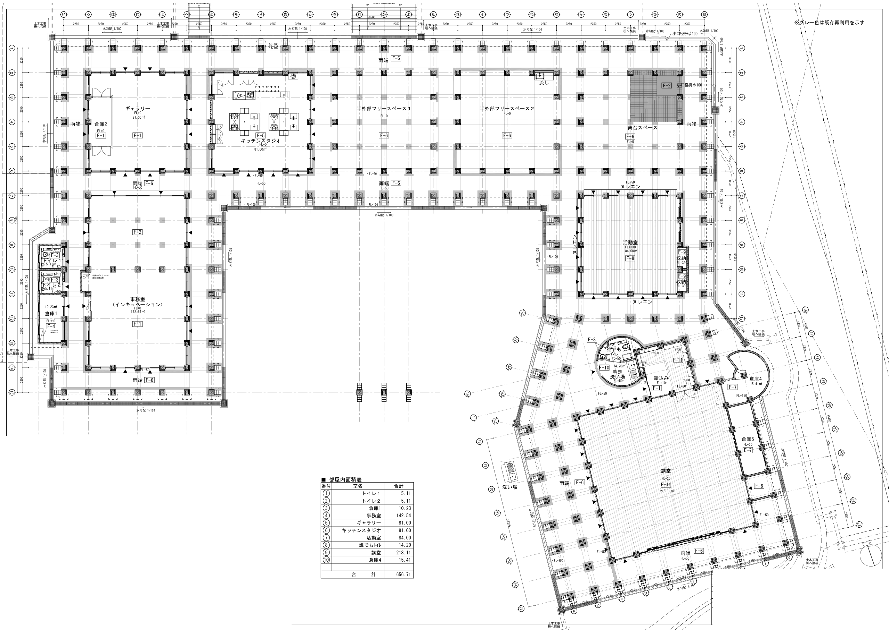

今帰仁のまんなかに、
診る・学ぶ・集う・買う場所を。
北山文化圏センターは、北部製糖の敷地内とその周りに、4つの施設をひとつのまとまりとして整える今帰仁村の事業です。 要確認：キャッチ
事業のあらましを見る写真：今帰仁城跡から望む海 仮：撮った人を確認
お知らせ
すべて見る →2027年3月12日（金）〜14日（日）2泊3日＋前夜11日のレクチャー（オプション）・定員20人（先着順）・参加無料 北山文化圏センターの「愛称」を募集しています
みんなが呼びやすく、親しみのもてる名前を考えてください。

いまの進み具合
2026年10月現在
診療所
建物が完成し、開業の準備中
開業：令和8年（2026年）11月
中央公民館
改修1期（解体・補修）を令和8年度に完了。2期は令和9年度
利用開始：令和10年度（2028年度）
コミュニティセンター
新しい建物の建て替え工事中
利用開始：令和10年度（2028年度）
道の駅
計画づくりの段階
開業：令和14年（2032年）予定
4つの施設
事業について
北山文化圏センターが何をつくり、なぜ必要なのかをまとめました。
北山文化圏センターとは
今帰仁村仲宗根・玉城の一帯（北部製糖の敷地内とその周辺）に、診療所・中央公民館・コミュニティセンター・道の駅の4つの施設を、ひとつの「北山文化圏センター」として整える事業です。
施設はそれぞれ別の役割をもちながら、駐車場や広場を共有し、村民の暮らしと、村を訪れる人の両方を支える場所をめざしています。

なぜこの事業を行うのか
1. 建物の老朽化
中央公民館は昭和50年（1975年）の完成から50年、コミュニティセンターは昭和59年（1984年）の開館から40年以上がたち、設備の不具合が増えていました。
2. 機能のまとめ直し
村役場の新庁舎への移転などで、村の施設の使われ方が変わってきました。ばらばらになった機能を、使いやすい形でまとめ直します。
3. 村の産業と交流の拠点づくり
北部製糖の敷地を生かし、今帰仁の食や産業を伝え、村内外の人が行き交う場所をつくります。
めざす姿
今帰仁村は、琉球の三山時代に「北山」の拠点だった、歴史と文化の香り高い村です。いまも地域の伝統が各地に残り、「北山の風（演技集団）」など、若い世代が北山の文化を受け継ぐ取り組みも生まれています。海・山・川の豊かな自然にも恵まれています。
こうした財産を暮らしと切り離さず、大切に守りながら生かし、次の世代へ受け継いでいく。北山文化圏センターは、そのための「つながりの拠点」です。拠点と拠点をつなぎ、歴史と未来をつなぐ場所をめざします。
住民が住みやすく、ずっと暮らし続けられる村にするため、地域・命・世代・文化をつなぐ施設を整えます。
これまでの経緯とこれから
- 令和4年（2022年）北山文化圏センター整備基本計画をまとめる 要確認
- 令和6年度（2024年度）整備事業が始まる。測量・地質調査、設計
- 令和7年度（2025年度）保健センターの改修工事、道路の舗装・排水などの工事が完了
- 令和8年（2026年）6月10日北山文化圏センター施設の設置及び管理に関する条例が村議会で可決
- 令和8年（2026年）11月診療所が開業（予定）
- 令和8年度（2026年度）中央公民館の改修1期（解体・補修）が完了。コミュニティセンターの建て替え工事（工事中）
- 令和8年（2026年）12月マスタープランをまとめる（予定）
- 令和9年度（2027年度）中央公民館の改修2期、旧コミュニティセンターの解体、駐車場・外構の工事（予定）
- 令和10年度（2028年度）中央公民館・コミュニティセンターが利用開始（予定）
- 令和14年（2032年）道の駅が開業（予定）
中央公民館という建物について
中央公民館は、沖縄の伝統的な建築の考え方を取り入れて設計され、建築として高い評価を受けてきた建物です。今回の改修では、建物の良さを残しながら耐震性を高め、ギャラリー・キッチンスタジオ・講堂などを備えた新しい使い方に生まれ変わります。設計は象設計集団で、アトリエ・モビルが協力しました。

施設の紹介
4つの施設の役割と、開く時期です。
診療所
| 開業 | 令和8年（2026年）11月 |
|---|---|
| 役割 | 村の身近な医療の拠点 |
| 診療の案内 | 要確認：診療所の案内を載せるかリンクにするか |
中央公民館
| 利用開始 | 令和10年度（予定） |
|---|---|
| 改修工事 | 2回に分けて行います。1期（解体と補修）は令和8年度に完了、2期は令和9年度の予定です。 |
| 主な部屋 | 講堂、活動室、ギャラリー、キッチンスタジオ、事務室 |
| 特徴 | 建物の周りの縁側のような半屋外の空間も、そのまま生かします。 |
| 使い方 | これから地域の声も聞きながら決めていきます。 |

コミュニティセンター
| 利用開始 | 令和10年度（予定） |
|---|---|
| 工事 | 令和8年度に新しい建物の建て替え工事。いまの（旧）建物は令和9年度に解体する予定です。 |
| 建物 | 鉄筋コンクリート造（一部鉄骨造）の2階建て |
| 主な部屋 | ホールと舞台、会議室、授乳室など 要確認：ホールの客席数 |
| 役割 | 敬老会や発表会など、村の大きな集まりの場 |
道の駅
| 開業 | 令和14年（予定）。前倒しできないかも検討しています。 |
|---|---|
| めざす姿 | 今帰仁の食と産業、北部製糖の歴史を伝え、村を訪れる人を迎える場所 |
| 名前・内容 | これから決めていきます。 |
スケジュールと進捗
施設ごとの予定と、いまどこまで進んでいるかです。
最終更新：2026年10月◯日
全体の年表
年度は4月から翌年3月まで。道の駅の工事時期は 要確認
年度ごとの予定
| 施設 | 令和7年度 | 令和8年度 | 令和9年度 | 令和10年度 | 〜令和14年 |
|---|---|---|---|---|---|
| 診療所 | 建物が完成 | 11月 開業 | 運営 | 運営 | 運営 |
| 中央公民館 | ― | 改修1期 完了 | 改修2期 | 利用開始 | 運営 |
| コミュニティセンター | 設計 | 建て替え工事 | 旧館の解体 | 利用開始 | 運営 |
| 駐車場・外構 | 舗装・排水 完了 | ― | 駐車場・外構の工事 | 利用開始 | ― |
| 道の駅 | ― | 計画づくり | 計画・設計 | 設計・工事 要確認 | 開業 |
計画づくりの予定
- 令和8年（2026年）12月マスタープラン（全体の方向）をまとめる
- 令和9年（2027年）3月基本計画をまとめる
- 令和9年（2027年）3月中央公民館の設計者・丸山欣也さんと、建物の使い方を考える「発見的方法ワークショップ」を開く予定（参加者募集）
お知らせ
工事の進み具合、募集、読みもの（事業や地域のことを知る記事）をお届けします。
試作：日付は仮です
よくある質問
村のみなさんから寄せられそうな質問に、いま決まっていることでお答えします。決まっていないことは「まだ決まっていません」とお伝えし、決まり次第、更新します。
最終更新：2026年◯月◯日
事業全体について
北山文化圏センターとは何ですか？
なぜ4つの施設をまとめるのですか？
場所はどこですか？
このサイトは今帰仁村の公式サイトですか？
スケジュール・工事中の暮らし
いつから使えますか？
道の駅はもっと早くできませんか？
工事はいつまで続きますか？
工事のあいだ、行事や集まりはどこでできますか？
施設について
診療所は何科ですか？
中央公民館の建物は壊すのですか？
改修後の中央公民館にはどんな部屋ができますか？
新しいコミュニティセンターにはどんな部屋がありますか？
道の駅にはどんなお店が入りますか？
使い方・申し込み・料金
使用料はいくらですか？
部屋の申し込みはどうすればよいですか？
駐車場はありますか？
参加・意見の出し方
意見はどこに出せばよいですか？
ワークショップはいつありますか？
運営・お金の出どころ
だれが施設を運営するのですか？
お金はどこから出ていますか？
このサイトについて
このサイトの運営と、お問い合わせ先です。
このサイトについて
このサイトは、北山文化圏センター整備事業の全体像と進み具合を、村民のみなさんにわかりやすくお伝えするためのものです。
今帰仁村の了承を得て、北山文化圏センター事業化推進事業事務局が作成・運営しています。今帰仁村の公式サイトではありません。
掲載の方針
- 村が決めたこと、公表されたことを載せます。
- 検討中のことは「検討中」と明記して載せます。
- 内容は今帰仁村の確認を経て掲載しています。 要確認：確認の手順
- 正式な手続き・申請などは、今帰仁村の公式サイトや窓口でご確認ください。
写真・資料の扱い
掲載している写真・図面の無断転載はご遠慮ください。人物が写る写真は、ご本人の了承を得て掲載しています。
お問い合わせ・ご意見
事業へのご意見・ご質問は、下記までお寄せください。いただいた内容は、個人が特定されない形で事業の検討に生かします。
| 窓口 | 北山文化圏センター事業化推進事業事務局 事業の内容・このサイトについて、どちらもこちらへ |
|---|---|
| 連絡の方法 | 問い合わせフォーム 決める：フォームの仕組み・メールアドレス |